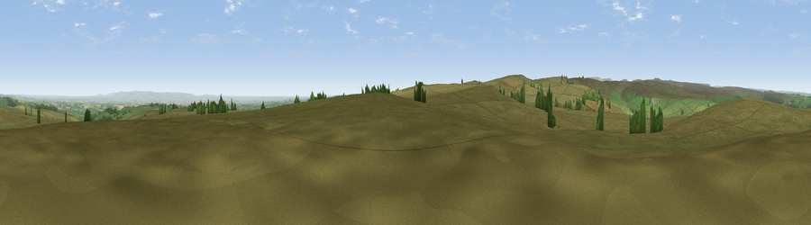

Viewpoint c9516_8328
#11448 in England · top 16% of its area beats it · —The view, rendered

A 360° render of this exact spot computed from the terrain model, tree cover and land cover — summer colours, afternoon light, calibrated against photographs of famous viewpoints. Real trees, hedges and buildings will differ in detail.
The panorama
Grey silhouette: terrain skyline in each direction (720 bearings, Earth curvature and refraction included). Dashed green: skyline with trees (+15 m) and buildings (+8 m) as obstacles. Blue strip: how far the ground is visible on each bearing.
Where the view opens
Wedge length = distance to the farthest visible ground on that bearing (vegetation-aware). Rings at 10, 25 and 50 km.
What fills the view
89% grassland · 7% cropland · 4% woodland
Angular shares of the visible panorama (visual magnitude), not map area. Landscape diversity 0.19 (0–1 Shannon).
Key numbers
More beautiful places nearby
The staircase of upgrades: each row has a higher view potential than everything closer. Driving times are estimates from straight-line distance, calibrated against real road routing — check an actual route before setting out.
| Place | Direction | Drive | Score |
|---|---|---|---|
| Viewpoint c9527_8322 | NNW · 1 km | ~2 min | 62.8 |
| Viewpoint near Swinton | N · 2 km | ~5 min | 65.2 |
| Viewpoint near Lofthouse | WSW · 3 km | ~7 min | 65.8 |
| Viewpoint near Swinton | ENE · 4 km | ~10 min | 68.4 |
| Viewpoint near Grewelthorpe | ENE · 6 km | ~13 min | 73.9 |
| Viewpoint near East Witton | NNW · 9 km | ~18 min | 77.8 |
| Viewpoint near Kirby Knowle | ENE · 31 km | ~49 min | 80.5 |
| Viewpoint near Thirlby | ENE · 35 km | ~53 min | 81.2 |
54.17795, -1.74986 · source: screening · position refined by local search. Computed location — check access rights before visiting.